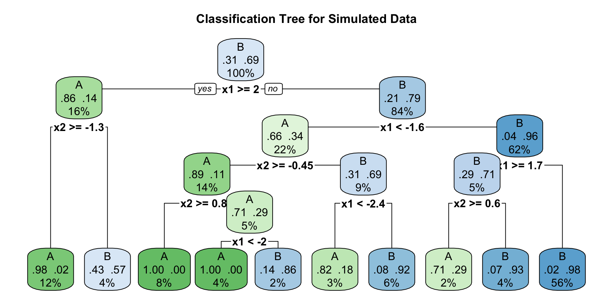
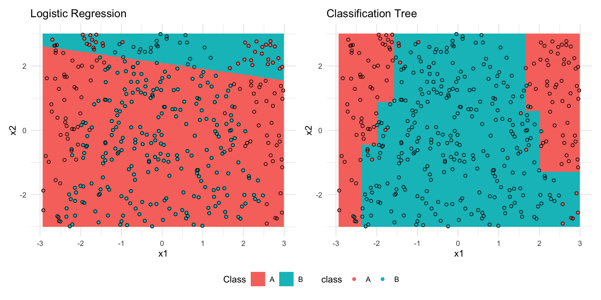

Tree-Based Methods and Random Forests
Instructions for today
- Log into Canvas
- Click on People on the right side of the page
- Click on Group
- Scroll to the group with the number on your desk and enroll yourself in the group (Tree based methods)
- Download the python code and upload it into Jupiter Hub
Time table
| Week | Date | Planned Activity | Delivery |
|---|---|---|---|
| Fri 14.10 | Tree based methods | Assignement 5 points | |
| 43 | Wed 21.10 | Neural Networks | |
| Fri 13.10 |
Plan for today
We are going to learn about trees
- what is a decision tree
- how do trees make predictions
- advantages and disadvantages of trees
- What is the intuition behind random forests
- Compare a single tree with a random forest
Motivation
Can we predict the type of bean from some measurement?
Available information:
- Area, Perimeter, MajorAxisLength, MinorAxisLength, Compactness
Group Work: Run Part 1 of the code and answer to the questions in Part 1 of the handout
Motivation
Can we predict the type of bean from some measurement?
Goal Predict the class of beans from some measurement.
This is a classification problem - the respons is categorical and not continuous.
Classification
We have already seen other techniques to solve this problem
Regression (yes, it is possible to have regression for multinomial data)
kNN
Today we are going to learn about tree based methods
What Is a Decision Tree?
Add FIGURE HERE!!
Key Idea The tree repeatedly divides the data into more homogeneous groups.
How does a tree learn?
- Take all the (training) data
- Try different splits
- For every split measure how different the two groups are
- Choose the split that most separates the groups
- Repeat for each group
Tree learns by finding the splits that best separate the classes in the training data, using simple and interpretable set fo rules.
A first, simple tree
Group Work Run the code and answer Part 2 of the handout
Trees - Some vocabulary
IMAGE WITH SPLIT, BRANCHES, LEAVES
A first, simple tree
IMAGE HERE (Three with one split)
How does a tree makes a prediction in each group?
A leaf contains training examples that reached that same point in the tree.
For classification the tree typically predicts the most common class among those examples.
For regression the tree typically predicts the mean among those examples.
Interpreting a tree
A tree can be explained as a set of rules.
Example:
If Area is below a threshold, predict Seker Otherwise predict Bombay
No statistics background is needed.
Advantages - Easy to explain and interpret
Disadvantages - Usually too simple
A deeper tree
One parameter of the tree is the depth.
Our tree had depth 1, what happens if we allow the tree to grow deeper?
Group Work Run the code and answer to the questions in Part 3
Logistic regression vs regression trees
We fit two models to a simulated dataset.
- \[ \log{\frac{p}{1-p}} = \beta_0 + \beta_1x_1 + \beta_2 x_2 \]

Logistic regression vs regression trees
Prediction surfaces

How deep should a tree be? Underfitting vs Overfitting.
The main parameter to tune is the tree dept.
Too Shallow
- Misses patterns
- High bias
- Underfitting
Too Deep
- Learns noise
- Memorizes training data
- Overfitting
Goal - Find a depth that generalizes well.
Group Work Run the code and answer to the questions in Part 4
Decision Tree Summary
Advantages
Easy to interpret
Easy to visualize
Require little preprocessing
Can model nonlinear relationships
Disdvantages
Overfitting: A tree can soon become too complex and learn noise
High variance: Small changes in the training data can produce a very different tree
Greedy decisions: At each split, the tree chooses the best option locally, which may not lead to the best overall tree.
Limited predictive stability: A single tree may not capture complex patterns reliably, especially when the data is noisy.
From One Tree to a Forest
To make predictions more stable we can use a random forest
Instead of relying on one tree
Build hundreds of trees on slightly different datasets
Combine their predictions
This is a Random Forest
 . . .
. . .
Group Work Run the code and answer the questions in Part 5
Random Forests
Advantages
Better predictive accuracy
Less overfitting
More stable than a single tree
Disadvantages
Harder to explain
Slower
No simple set of decision rules
Tuning parameters in a Random Forest
We consider two important parameters (there are more one could tune)
n_estimators: Number of trees in the forestmax_depth: Maximum depth of each tree
We use 5-fold cross-validation to tune them.
Group Work Run Part 6 code and answer Question 6.1
Evaluating the models on the test set
Part of the data was set apart as test set.
We want to evaluate the best tree and the best random forest based on two metrics:
- Accuracy
- Confusion Matrix
Evaluating the models on the test set
Part of the data was set apart as test set.
We want to evaluate the best tree and the best random forest based on two metrics:
- Accuracy \[ \text{Accuracy} = \frac{\text{Correct Predictions}}{\text{Total Predictions}} \]
- Confusion Matrix
Evaluating the models on the test set
Part of the data was set apart as test set.
We want to evaluate the best tree and the best random forest based on two metrics:
Accuracy \[ \text{Accuracy} = \frac{\text{Correct Predictions}}{\text{Total Predictions}} \]
Confusion Matrix
- Rows: Actual class
- Columns: Predicted class
This tells us much more than a single accuracy value
Group work Run the code and answer to the questions in Part 7
So…Which Model Would You Choose?
There is rarely one “best” model. The right choice depends on the problem.
If your goal is prediction probably Random Forest!
If your goal is explanation probably Decision Tree!
Summary
Decision trees make predictions using simple rules
Shallow tree underfit and deep trees often overfit
Cross-validation helps tuning model parameters
Random forests combine many trees
Random forests usually improve prediction
Interpretability and accuracy often compete